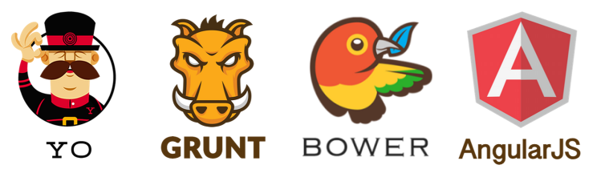

Jedi Project é um Yeoman generator.
que reune um conjuto de projetos para a criação de projetos Angular, Java, .NET, NodeJS.
O gerador é composto por um rotina de geração principal, que gera toda estruturação v0 de um projeto, e sub geradores para criação de controllers, modais, módulos e funcionalidades..
Este projeto utiliza a pilha:
